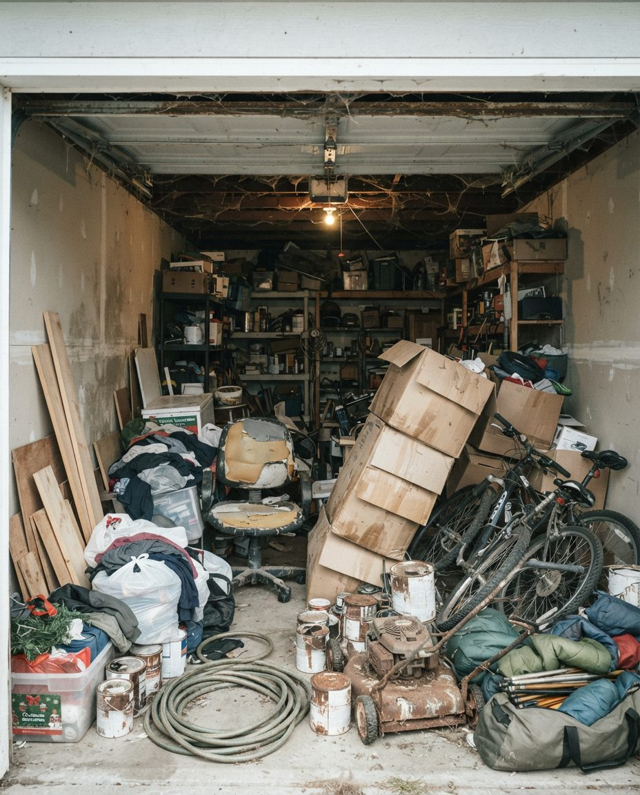
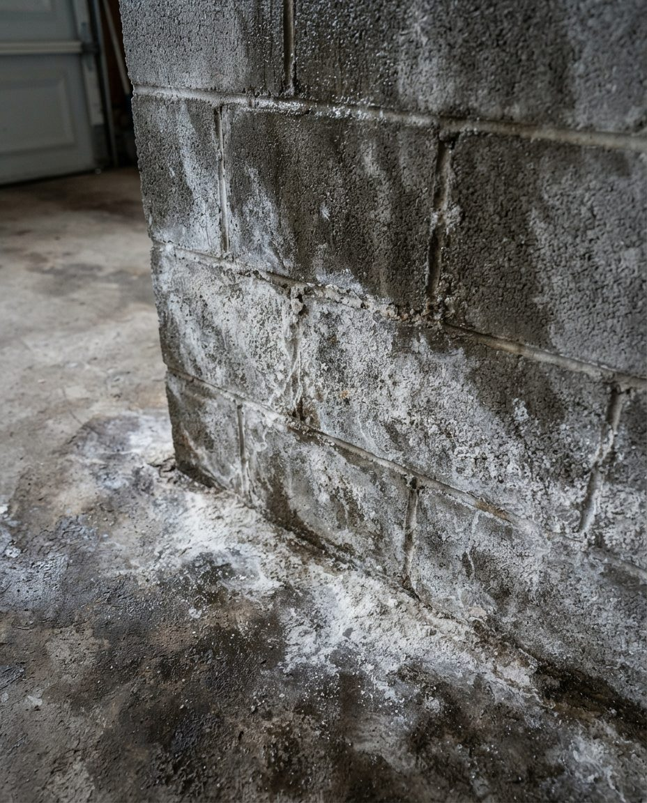

Every spring the City sweeps your street and asks you to get the car off it, suggesting the driveway, the garage or the back lane instead. If the garage still holds the winter tires, a dead snowblower, six months of ice melt and the gravel the tires dragged in, we clear it: grit bagged, winter gear put away or gone, paint and old gas to the City's free drop-offs, and a swept bay the car can park in.
A Calgary garage takes a beating between November and March that a garage in Victoria never sees. The City spreads rock salt and brine on roads down to about -14°C, and below -15°C it switches to Pickle, a mix of 3% salt and 97% gravel, plus liquid calcium chloride. All of it rides home in the tire treads and wheel wells, melts off on the slab, and dries into a gritty white crust along the walls. On top of that sits whatever got dropped inside the door because it was -25°C and nobody wanted to deal with it.
For a quote, email inquiry@garagescape.ca three photos: the garage from the driveway with the door open, the back wall, and the floor along one side wall. Tell us your community and, if you know it, the date your street is being swept. Or call (587) 804-9266.

Illustration, not a client's garage.The spring mix in one frame: paint cans and a mower with old fuel (free City drop-off once drained or sealed), bikes and a hose that need to be at the front by May, a holiday bin that belongs on a high shelf, and boxes that went soft on a wet floor.
"Spring" in Calgary runs from the first chinook in March to the last snow in May, so the right week for a cleanout depends on what you're trying to beat. These are the dates that matter, from the City's own schedules.
| When | What happens | What it means for the garage |
|---|---|---|
| March, between chinooks | Snow melts, refreezes, melts again. Meltwater runs off the cars and pools on the slab. | Cardboard on the floor wicks up water and collapses. Anything stored on the concrete should be up on a shelf or gone. |
| Week of April 1 (approx.) | Green cart pickup goes back to weekly. It's every other week from November. | Leaves, grass and small branches have a weekly outlet again. A spring cleanout doesn't need to haul them. |
| Mid-April to July | City Spring Clean-up: community street sweeping, Monday to Friday, 8 a.m. to 4 p.m. Parking bans posted ahead. | The car has to be off the street on your date. The City lists the garage as a place to put it. |
| April and May | A spring snowfall is still possible. The City pauses sweeping and pushes missed streets to the end of the program. | A late storm doesn't stop a cleanout, which happens inside the garage. It can move your sweep date. |
| By mid-June | The few hilly back lanes that got winter traction material are swept. Other lanes aren't part of the program. | If you have a lane garage, the gravel at your door is yours to deal with. |
| June onward | Hail season. The June 13, 2020 hailstorm hit northeast Calgary. | The car that's parked inside doesn't get dented. That's the deadline most people are actually working to. |
The City sweeps more than 17,000 lane kilometres of paved road each spring. Your community gets a fixed date, and the schedule rotates: a community swept in the first three weeks one year gets swept later the next. You'll know it's coming three ways. Signs with "No Parking" symbols go up in the community a few days ahead, small 3-foot "No Parking" signs go up at least 24 hours ahead on streets where towing applies, and you can look up your address or sign up for an email or text alert the day before at calgary.ca/sweep.
Leave the car out and Calgary Parking's camera vehicles send the ticket by mail: $80 if you pay within 10 days, $90 within 30, $120 after that. On streets with the small signs, the car can be towed, and if it goes to the impound lot you pay the ticket, the tow and the impound fee.
The City's advice is to park in your driveway, garage or back lane. On a street of front-drive houses with two cars each, the driveway holds one. The second car needs the garage, and in April that's usually the one bay full of winter. If your street is narrow and the neighbours are all looking for the same spaces, an empty garage bay is worth more that week than any other.
Lane garages have their own rules for sweep week. If you park in the lane, stay at least 5 metres from the alley entrance, leave 3 metres of the lane clear for passing, and keep clear of other people's garage doors: the no-parking zone in front of a garage or driveway runs the full width of the alley, and parking within 1.5 metres of one can get you ticketed or towed. Carts and anything else you store in the lane count toward that clearance. For older inner-city lane garages, see our Mount Royal and Elbow Park cleanout page.
Once the garage is empty you can see the real floor. In most Calgary garages after a full winter that means three things.

Illustration, not a client's garage.This photo shows mineral bloom on a block wall, not road salt, but dried salt and calcium chloride leave a similar white crust along the base of Calgary garage walls by April. Sweeping takes the loose part. The rest needs a wash.
One rule matters if you wash the floor yourself. Calgary's Stormwater Bylaw lets only water into storm drains; soap and detergent are prohibited, biodegradable or not, and the specified fine for a soapy car wash running into the street is $3,000. Degreaser and rinse water from a garage floor should be picked up with a wet vac, not pushed down the driveway to the gutter. If your garage has an epoxy or polyaspartic coating, the cleaning is different again: see coated garage floor cleaning.
A spring cleanout is half removal and half rotation. The winter things that are staying move to the back or up high, the summer things come forward, and the broken ones from both seasons leave. This is how we handle the items that show up in nearly every Calgary garage in April.
| Item | If it's staying | If it's leaving |
|---|---|---|
| Winter tires | Most people swap once daytime temperatures stay above about 7°C, the usual tire-industry rule of thumb. Clean the salt off before storing, stack them on their sides or hang them, off the bare floor. | Check the four-digit date code on the sidewall. Old or worn tires are free to drop off at City sites for residential customers. They can't go in a cart. |
| Snowblower | Store it the way the manual says, which for most means running the tank dry or adding fuel stabilizer. Move it to the back corner. | Old gasoline goes free to a City household hazardous waste drop-off. Drained, the machine goes for scrap metal. |
| Ice melt and sand | Close the bag or move it to a lidded bin. A torn bag left on the floor all summer is how salt keeps getting on the slab. | Spilled ice melt and loose sand get swept and bagged with the rest of the grit. |
| Shovels, scrapers, roof rake | Hang them on the back wall, off the floor. | Cracked shovel blades and broken scrapers are garbage. |
| Lawnmower and trimmer | Comes forward. Check for fuel left in since fall. | Drain the fuel and oil first. Community Cleanups don't take lawnmowers; scrap metal does. |
| Barbecue propane cylinder | Stores outdoors, never in an attached garage. | Expired or damaged cylinders go free to a City household hazardous waste drop-off. |
| Bikes | Come to the front. If a bike sat next to the salty tire lane all winter, check the chain for rust before the first ride. | Working bikes go to donation. Kids' bikes that are outgrown are the easiest donation in the garage. |
| Holiday decorations | Up to the highest shelf or ceiling rack until November. | Burnt-out light strings go with the garbage load unless a depot near you takes them for recycling. |
| Garden chemicals | Sealed, off the floor, out of kids' reach. | Fertilizers, pesticides and weed killers are household hazardous waste, free to drop off. |
If the rotation shows you need more shelf or ceiling space, that's a separate job. Our garage storage solutions team handles racks and wall systems once the garage is empty and you can see what's left.
City landfills charge $113 a tonne for garbage in 2026, with a $25 flat fee for a load under 250 kg. If you mix free items into a charged load, you pay for the whole load. So the cheapest spring cleanout is the one that sorts by destination before anything is weighed.
When a Community Cleanup falls in the same week as your cleanout, we can stage the bulky items for it and haul the rest. If the timing doesn't line up, they go with the truck.
We quote from photos rather than a flat rate, because two double garages can be very different jobs. In spring, these are the things that change the number.
| Factor | Why it matters in spring |
|---|---|
| Weight, not just volume | Bagged gravel and wet cardboard weigh far more than they look, and the landfill charges by the tonne. |
| How much goes to free routes | Tires, electronics, paint and old gas cost nothing at City sites if they're separated. Mixed in, they raise the landfill bill. |
| Hazardous items | Each can of paint or jerry can of old gas is a separate trip to a drop-off with a per-visit limit. |
| Floor wash added or not | Sweeping and bagging is part of the cleanout. Scrubbing the bonded salt off is a floor cleaning add-on. |
| A fixed deadline | If the bay has to be empty before a sweep date or a move, we plan the day around it. |
| Access | A front-drive garage loads straight onto the truck. A detached lane garage with a long walk or a narrow lane takes longer. |
| How much sorting needs you | A garage of clear junk moves fast. A garage of family keepsakes needs your decisions; see garage decluttering for that kind of job. |
A cleanout works in any month; our Calgary garage cleanout page covers the year-round version. If you're selling this spring, start with the cleanout before listing. Clearing a parent's garage is an estate cleanout, and a garage that has been filling for years is a hoarding cleanup. If the mess is from a renovation over the winter, see post-renovation garage cleanup. On an acreage with a shop, see Bearspaw and Springbank acreage cleanouts. We also work in Airdrie, Okotoks and Cochrane.
We quote from photos, because the price depends on what's in the garage more than its size. Spring jobs are driven by weight (wet cardboard and bagged road gravel are heavy, and City landfills charge by the tonne), how much can go to free City drop-offs instead of landfill, how many hazardous items there are, whether you add a floor wash, and whether the job has to be done before a fixed sweep date. City of Calgary landfill rates in 2026 are $113 a tonne for garbage, with a $25 flat fee for loads under 250 kg.
Cleaning out and organizing are two jobs with two prices. A cleanout is labour, a truck and disposal: what leaves, how heavy it is and where it goes. Organization adds shelving, wall systems or overhead racks, so the cost depends on the products and installation. Most people get the cleanout done first, then decide what storage they need once they can see the empty garage.
Empty it onto the driveway on a dry day, one wall at a time. Sort by where things are going, not by shelf: keep, donate, City household hazardous waste (paint, old gas, propane), free City drop-offs (tires, electronics), recycling and landfill. Sweep and bag the floor grit while the slab is bare, then put back only what you use, with this season's gear nearest the door. Haul the go piles the same day so nothing drifts back in.
With water only. Calgary's Stormwater Bylaw allows only water into storm drains, and soaps and detergents are prohibited even if they're biodegradable. Washing a car with soap where it drains to the street carries a specified fine of $3,000. The same rule applies when you wash out a garage: degreaser and soapy rinse water should be picked up with a wet vac, not pushed down the driveway.
The City's Spring Clean-up runs from mid-April into July, with community sweeping Monday to Friday, 8 a.m. to 4 p.m. Signs go up in your community beforehand and you can sign up for an email or text alert 24 hours before your street is swept. The City asks you to move your car off the street and names driveways, garages and back lanes as alternatives. A car left on the street can be ticketed ($80 to $120 depending on when you pay) or towed.
Leaves, grass and small branches go in the green cart, which is picked up weekly from April to October. Old garden hoses, broken plastic planters and torn tarps are garbage. Fertilizers, pesticides and other garden chemicals go to a City household hazardous waste drop-off, which is free. A gas lawnmower has to be drained of fuel and oil before it goes for scrap or to landfill.
Only for the first fifteen minutes, or on a video call, so you can point out what stays: summer tires, the snowblower, anything with a name on it. After that we work from the overhead door code you give us, set aside anything that looks personal or valuable instead of deciding for you, and send photos when the bay is empty.
Book once your street's sweep date is posted, or any dry week from late March. The aim is to have the car parked inside before your street is swept and before hail season. A spring snowfall can still arrive in April or May; it doesn't stop a cleanout, because the work happens inside the garage, but it can push the City's sweeping schedule back.
Send three photos (the garage from the driveway, the back wall and the floor along one side) and the date the car needs to be inside. We'll reply with a quote and the first day we can do it.
Calgary, Airdrie, Okotoks and Cochrane.